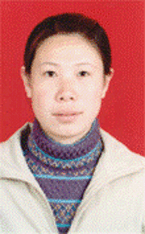

驾驭苦难 永不低头
有句话叫做“苦难是人生的老师”，在人生的前二十年里，我在苦难的洗礼中成长，在苦难的考验中领悟人生的真谛。我常常想，一个人要怎样生活才有意义，是每天愁眉不展，还是微笑面对一切？从小到大，苦难像影子一样缠绕着我，但我的信念却始终坚定：只要我活着就不能让苦难随意支配，我要驾驭它，我要在拼搏中塑造一个全新的自我！下面我就把自己的经历告诉大家，我要让所有的人都知道：与困难斗，其乐无穷！
我的家乡是个贫困落后的地方，重男轻女的思想根深蒂固，我的出生无疑是家人心里的一堵墙。在我出生之后的两年间，家里又多了两个孩子，而且都是妹妹，父母将无奈深埋在心底，可爷爷奶奶的冷漠与不满却溢于言表。于是没多久父母不得不与奶奶家分开了。分家之后的我们除了几口人之外一无所有，直到现在我家还住在拥挤又简陋的草房里。春天刮风时，房上的草一次次被
掀跑，又被父亲一次次的拣回来用土块压上；夏天雨大时，雨点总会穿过屋脊，打到破旧的水盆里。父母没有怨言，我也没有，有时候我甚至把这有节奏的声音当成一种音乐。就在这“风雨协奏曲”中，我度过了二十多年。我不清楚父母挨到今天究竟经过了多少艰辛，但我知道，他们最大的心愿就是希望我能有出息。
还记得八岁上小学的那一年，我没有书包，就用母亲给我准备的一块布包上几个本子，抱在怀里，兴高采烈的跟在大孩子们后面去上学。开学的第一天下了场大雨，家里没钱买雨伞雨衣，我就顶着雨上学。当我走进教室的那一刻，老师和同学都已经来了，我急急忙忙往座位那儿跑，寂静的教室里只能听见我鞋里的水啪哒啪哒的声音。下课后，大家都叫我“落汤鸡”，可我并不在乎，因为我能上学，这已经足够了。
父母都是老老实实的农民，我也许也遗传了他们的“老实”。每天放学我都要给好几个同学背书包，不背就得挨打。黑瘦的我就在无声中忍耐，因为如果父母知道我跟人打架，一定不让我再去上学。那时除了学习外，一有时间我就得帮母亲照顾两个妹妹，还要干农活，拔草，放牛，做饭，洗衣服，这些在我八九岁时我就已经习以为常了。但所有这些都不能动摇我学习的决心。从小学起我就一直担任学习委员，每次大考小考我都是班级前两名，在学习上我从不头疼。唯一让我为难的就是交学费，每次我都不能按时上交，所以每次都得挨老师的批评。尽管那时我学习最好，但老师只能无奈地把我撵回去。现在想起这些我总有一种雨后天晴的感觉。我始终相信，山穷水尽后就会有柳暗花明的村落，我的理想会在那里安家。
就这样度过了小学，1994年我以最优异的成绩升入初中，并在班级当了学委和科代表，成绩依然保持在年级前三名，甚至连续多次是年级第一名。当时妹妹们也正在上学，我知道，我可能要失去上学的机会了。按农村的习惯理应姐姐务农，妹妹上学，虽然父母知道我不甘心，不情愿，可又能有什么办法呢？初二暑假的时候父母跟我说了家里的情况，我很理解他们，也没什么埋怨的。我清楚地记得一个阴暗的早晨，我和父母、二妹一起去蒿地，中午吃的是馒头咸菜就着凉水。那时我家只有在过年过节时才买几斤大米，馒头也是很少的，所以吃起来格外的香，可我却食之无味。一整天我都没说一句话，只是拼命的拔草，手指划破了我都不知道。想着以后再也不能看书了，再也不能跟同学讨论问题了，再也听不到老师的讲课了，鼻子一酸，眼泪都要下来了。可我仰起头，又把它咽了回去。我不能让父母看见。然而父母仿佛看穿了我的心思，我沉默，他们也无语。但我知道，他们懂我，只是我们谁都不能立刻改变家里的状况啊！午后下了一场大雨，我的泪水终于掉下来了。雨水，泪水和着我手上的泥，把我画成了一个十足的“小丑”。我第一次感觉到雨水不是咸的，而是苦的。自那以后，父母再没说过让我退学。开学之前，他们为我筹了学费。我知道，我不可以辜负他们。
整个初中我都没有让家人失望，除了成绩一直在全年级名列前茅之外，我还考上了重点高中。可是困难依然摆在面前，重点高中的学费要比普通高中高一倍多。父亲很为难，即使上普高，学费也是拿不起的。为了让我能有更好的学习环境，父亲曾想借钱让我上重点高中，但我毅然选择了普高。我向父亲发誓，不管在哪儿，只要我努力都能学好，我一定可以用实际行动证明这一切。父亲没有说话，可他那双被皱纹包围的眼睛却闪动着一丝欣慰。
虽然我只上了普高，但我仍感激父母，感激生活，是他们让我懂得什么是坚强，让我懂得了怎么在学习的同时料理一些生活上的琐事。当时学校没有食堂，几乎所有的同学都住在供吃供住的家属楼里，费用很高。为了省钱，我便和同村的一个同学合租了一间离学校很远，但便宜很多的房子。这样我就可以每月从家拿粮自己开火了。每天四五点钟我就起床做饭，在饭没好的时候就赶快看几眼书。我知道高中的课程很多，如果不抓紧时间，我就会被落下。房东怕费电，规定我们在12点前关灯。为了学习，我有时就在半夜上厕所时看书。记得有几次冬天感冒，半夜发烧起来吃药的工夫我都要看上一会儿，还因此被房东骂了好几回。可我觉得，只有这样努力才能取得好成绩，才对得起这来之不易的学习机会。那时全校五六百人我也总是位于前几名，连年被评为三好学生，还被老师同学们称为“一号种子选手”，年年被评为“优秀团员”，还曾获得市里作文竞赛一等奖。同时我也在高三加入中国共产党。向党旗发誓的那一刻，我深切的感到，所有的痛楚都是那样渺小，只要我勇敢的走下去，我就会战胜那些看似可怕的苦难！
可生活会给我设置什么样的痛楚总是让我难以预料。就在高考将近的时候，我突然听说父亲小腿溃烂下不了地。我不顾一切地跑向电话亭，可拿起电话后我又放下了，我不能让父亲知道我为他担心，否则他的病情会恶化的。那天晚上我好长时间没看书，一个人蒙着被子想了很多。我想，如果我不上学，帮父亲干点农活，他也许就不会病倒了；如果就因为上学我没有尽到孝道，那我怎么对得起生我养我的父母？我越想越生自己的气，可我又一想，不能这样，我必须坚强，我现在要做的不是悲伤，而是振作起来，用优异的成绩为父亲“疗伤”。高考结果出来后，我以全校文科第二名的成绩考入师大，村里的第一个大学生。从那以后爷爷奶奶对我的看法有了改变，我终于用自己的努力让他们对女孩，对我，刮目相看。村里人也渐渐意识到，女孩一样可以有出息。
即将肩负着全家人，全村人的希望走进大学，我的心情是复杂的。我知道，这才是我人生的真正起点。等待我的不是桃花美景和悠闲的生活，而是一场战争，一场只能胜不能败的战争。这一点，在父亲点头哈腰的为我凑学费时我已深深体会到了。父母愧疚地对我说：“只有这些了。”我坚定地笑着告诉他们：“这已经足够了，生活费我会自己解决的，我已经不是小孩子了。”父亲只有无奈的沉默，我想，我只有用行动可以驱除这无奈。于是，我出发了，开始了我的战争。我知道，要战胜必须建立“根据地”，我的“根据地”就是我的温饱，第一仗开始了。
我是学俄语专业的，大家都知道，基本上没人要用俄语家教，这使我的温饱更加难以解决了。家教没人要，我就去当家教信息联系员。同学们怕我被骗，都劝我别去，但我自己知道目前的我只能孤注一掷。尽管老板的条件是刻薄的，我也“上岗”了。开始时成绩还不错，老板也很满意。但不知道为什么那年的冬天来的特别早，也特别的冷，我穿着仅有的一件很多年前别人送的小大衣，像安徒生童话中的卖火柴的小女孩一样，顶着刺骨风雪走在马路边。迎着路人鄙夷的目光，我一遍遍的告诉自己坚持、坚持、再坚持！这样熬了两个多月后的一天，同行的一位室友因联系的信息少而被老板责骂，我的心里很也不是滋味儿，于是我便把自己找来的信息给了她。可我却因此而失去了这份工作。室友很愧疚，我只是笑着告诉她“千金散尽还复来”，其实只有我自己知道这还复来的过程是如何的艰难。在接下来的日子里，我只能从牙缝儿里省钱。我给自己定了个“一多一少”的吃饭原则，即多吃方便面，少吃菜，吃菜也要吃最便宜的，有时干脆就是馒头咸菜。生活越是艰难我就越要坚强，总有一天我会拨开乌云采摘阳光之花的。
持续了一段时间后，我终于找到了一份教初三数学的家教。我心里很高兴，生活费总算是有着落了。那一天，我兴冲冲的按家长告诉我的地址去找公交车，可接下来的就是在冰天雪地里苦等了两三个小时，直到天黑也没找到该坐的车。回到寝室时，我的全身都冻僵了。我觉得好委屈，不是为了受冻，而是为我的生活费发愁啊！我不想失去机会，只好又跟家长联系，才知道是他们弄错了地方。于是第二天我又一次找到他家，终于在成功的试讲之后又开始了新的工作。因为每天坐车都要花去近三个小时的时间，我干脆把知识点写在纸条上带到车上看。生活对我的考验并没有停止，不久之后那位家长要求我陪读，还说会加工资。可外院的学习特别忙，如果我继续做这份家教的话就会严重影响我的学习，那就意味我不仅因此失去了上大学最起码的意义，更重要的是我的父母知道了会很失望的。无奈之下，我只能再度“失业”了。生活费又成了大问题，学校虽有补助，可是只能支撑一段时间。在学习之余，我又开始留心有关家教和钟点工的信息。好在没多久我又找到了一份家教，中间也需要换车，为了省钱，我就早出发半小时，只坐一次车，剩下的路走过去，把换车的钱省下来。每次讲4个小时，中间只休息五分钟，这样下来我总是口干舌燥。有一次上完课已经是1点多了，我的肚子里早已打起仗来，看着路边热气腾腾的包子，我的脚就忍不住向那边移。心里本来想买两个，却不知为什么嘴巴上说的是一个。接过包子，我不顾别人的目光就在大街上边走边吃，一个小包子对饥饿的我来说什么事也不顶，但我强迫自己必须把这可怜又珍贵的小包子当成今天的午饭，无论如何不许再吃了！家教与学习都在争抢我的时间，忙碌的日子里，我的词典里已经没有“双休日”这个词了。当全楼的同学都还在睡梦中时，我已经第一个出发，开始我去完成我的任务了。这样日积月累，我的体质严重下降，长期的营养不良导致了胃炎，头疼更是家常便饭，偶尔的并不严重的感冒也要在我身上持续一周以上。再加上高二那年做了一次小肠粘连和阑尾炎手术，伤口经常发炎，这些伤痛已经加在一块，再有一点点轻微的病痛就足以让我憔悴不堪。有时病痛的时间长了，我就去想别的事，想和家人在一起的快乐时光，以转移对疼痛的注意力。可精神疗法有时连自己也欺骗不了，很多时候是吃了止痛药都不管用，于是只能打针，针孔多得连护士都不知道该往哪儿扎了。每次生病都能让我想起从前，小时候，每到换季我都要得一场病，别的孩子都盼望过年过节，而我的年节却是伴着病痛度过的。为了不在请人打针上花太多的钱，母亲硬是含泪学会了打针。有时扎很多针也扎不上，我还没有哭痛，母亲就已经泣不成声了。我坚持着跟母亲说：“没事，我是铁打的，扎不坏”。好在我真是被“打”出来，再有什么病痛，我都能够挺住，所以做手术时，我没有掉一滴泪，我要让父母知道，他们的女儿是坚强的。我常觉得这样的经历是我的一笔财富，有了它，再大的风浪我也敢闯。记得俄语中有句谚语说“没有一个人能称自己死前是幸福的”。这里，我想说“没有一个人一生总是不幸的”。抱着这种信念，我始终未曾放弃希望，我常告诉自己如果让困难打倒了，那就不配是父母的女儿。
在学习上，我更不允许自己是个弱者，在过去的两年里我的专业课都是优秀。对于学外语的人来说，第一外语与第二外语常发生冲突，我将这些冲突总结起来，再慢慢的想办法加以解决。学外语对母语也有冲击，我便抓紧时间读一些中国经典小说，写点文章，以提高自己的文学素养。有时还用外语写点日记，这样也可以促进外语的学习。此外，我还担负起给同学们带早自习的任务，利用早自习时间给俄语零起点同学讲俄语的有关知识。虽然这会耽误一些时间，但我想这也是学习的过程，并且我可以通过它了解自己学习的不足。进入大学以来我两次获得“一等奖学金”，两次被评为“优秀学生称号”，2003年又获得 “国家奖学金”，同时被评为 “自强不息优秀团员”称号。基于这些成绩，大家也公认我该被派出国留学一年，但上学期期末，系里派的两个人当中没有我。很多人认为不公平，但我自己很快就想明白了，我知道系里这样做一定有道理，也许这只能说明我该继续努力，况且我还可以利用这一年的时间学习出国得不到的知识，包括“理论语法国情”和文学等。面对与机遇的失之交臂，我再一次坦然的接受了人生的考验。
别人都说大学里的同学关系特别难处，我在这方面也曾面对一些压力。可无论别人怎么看我，我依然是我，当别人遇到困难时，我还会尽量的帮助他们。我始终相信“我为人人，人人为我”。寝室有的同学缺乏独立生活的经验，我就帮他们洗衣服，教他们补袜子，督促他们打扫卫生。有时虽会得罪人，但“路遥知马力，日久见人心”，我的真诚和直爽换来的是真正的友情。两年的大学生活，我结交了许多的朋友，在他们需要我时，我愿尽我最大的努力去帮他们。每当我生病在床不能上课时，寝室里总是挤满了来看我的同学，他们的每一句话在我看来都比良药有效的多。“付出总有回报”总是有它的道理，命运始终是公平的，它在给我困难的同时，也赋予我生命的色彩。正因为如此，在连任两年团支书期间，我班班级工作开展的有声有色，使班级具有强大的凝聚力。在今年的换届中我又被选为分团委组织部部长，可以说我的战争是轰轰烈烈的进行时。当然，我更知道生活对我的考验并没有停止，不仅是现在，在不久的将来，我可能还要承担起更大的责任。
去年，我的婶婶突然去世了，留下了不到一岁的小妹妹，叔叔又先天残疾，可怜的孩子与孤儿无异。母亲把她抱回来时，她是那样的瘦小，整个身子都蜷缩在被子里，只有小小的眼睛在充满渴望的闪动着。父母已经无力再把她养大了，可又不忍心放弃这小小的生命，我跟母亲说：“妈，咱们养着她吧！等我大学毕业了，我来供她。”于是，她便在我家住到了现在，每到放假时，我都用节省下来的钱给她买一点东西，看着她现在已经能满地跑着叫我姐姐，我心里就有一种莫名的欣慰感和使命感。我知道未来的路有多艰辛，但想到父母是幸福的，叔叔是幸福的，妹妹是幸福的，全家人都是幸福的，我就是受再大的苦也值得。
都说人要倒霉连走平地也要摔跟头。这学期刚开学，我就把带来的一千元钱都丢了。这对我来说就像晴天霹雳，一千元对我这样一个平常连菜都舍不得买只能用咸菜下饭的人来说意味着什么？我欲哭无泪，在雨中一个人拎着伞走了好久，心中暗骂自己怎么这么没用。那天我好沮丧，什么也没做，饭也没有吃。在寝室里，我胡乱翻起以前的日记，突然想起了一个已故的中学同学。她走的时候只有十八岁，留下的只有那张带着童真的脸和那渴望生命的眼神在我的记忆中永远难以磨灭。我忽然明白，与失去生命比起来，天大的不幸也算不了什么，因为我们还有最基本的与困难斗争的武器——生命。我从床上爬起，打起精神，重新计算这学期的费用。于是发现，我这儿还有上学期剩下的一点钱，如果能争取到奖学金，再加上学校的补助，对付到期末不成问题。这件事我一直没告诉父母，因为我不想再给父母增添任何的烦恼。也许，人的生命是脆弱的，可人的灵魂应该是坚强的。我不想对生活的苦难加以抱怨，我也不想祈求命运给我多大的偏爱。面对着种种的困难，我只想说：让暴风雨来得更猛烈些吧！在生活的道路上没有平坦的大道，我们要勇敢的探索下去，这样你的生活才不至于平庸。我们可以活的平凡，但决不可以活的平庸。如果我们的脚下是贫瘠的荒漠，我们可以用自己的手把它变成肥沃的绿洲。
亲爱的朋友，当你看到小草从石缝中钻出，你的体内是有一种东西在涌动？当你看到寒梅在雪中傲立，你是否已嗅到它的芳香？人，谁没有经历磨难，但我相信只要坚持住了，一定会守得云开待月明。只要你坚持，困难会成为你的奴隶，而你也将驾驭困难，超越自我。
还记得八岁上小学的那一年，我没有书包，就用母亲给我准备的一块布包上几个本子，抱在怀里，兴高采烈的跟在大孩子们后面去上学。开学的第一天下了场大雨，家里没钱买雨伞雨衣，我就顶着雨上学。当我走进教室的那一刻，老师和同学都已经来了，我急急忙忙往座位那儿跑，寂静的教室里只能听见我鞋里的水啪哒啪哒的声音。下课后，大家都叫我“落汤鸡”，可我并不在乎，因为我能上学，这已经足够了。
父母都是老老实实的农民，我也许也遗传了他们的“老实”。每天放学我都要给好几个同学背书包，不背就得挨打。黑瘦的我就在无声中忍耐，因为如果父母知道我跟人打架，一定不让我再去上学。那时除了学习外，一有时间我就得帮母亲照顾两个妹妹，还要干农活，拔草，放牛，做饭，洗衣服，这些在我八九岁时我就已经习以为常了。但所有这些都不能动摇我学习的决心。从小学起我就一直担任学习委员，每次大考小考我都是班级前两名，在学习上我从不头疼。唯一让我为难的就是交学费，每次我都不能按时上交，所以每次都得挨老师的批评。尽管那时我学习最好，但老师只能无奈地把我撵回去。现在想起这些我总有一种雨后天晴的感觉。我始终相信，山穷水尽后就会有柳暗花明的村落，我的理想会在那里安家。
就这样度过了小学，1994年我以最优异的成绩升入初中，并在班级当了学委和科代表，成绩依然保持在年级前三名，甚至连续多次是年级第一名。当时妹妹们也正在上学，我知道，我可能要失去上学的机会了。按农村的习惯理应姐姐务农，妹妹上学，虽然父母知道我不甘心，不情愿，可又能有什么办法呢？初二暑假的时候父母跟我说了家里的情况，我很理解他们，也没什么埋怨的。我清楚地记得一个阴暗的早晨，我和父母、二妹一起去蒿地，中午吃的是馒头咸菜就着凉水。那时我家只有在过年过节时才买几斤大米，馒头也是很少的，所以吃起来格外的香，可我却食之无味。一整天我都没说一句话，只是拼命的拔草，手指划破了我都不知道。想着以后再也不能看书了，再也不能跟同学讨论问题了，再也听不到老师的讲课了，鼻子一酸，眼泪都要下来了。可我仰起头，又把它咽了回去。我不能让父母看见。然而父母仿佛看穿了我的心思，我沉默，他们也无语。但我知道，他们懂我，只是我们谁都不能立刻改变家里的状况啊！午后下了一场大雨，我的泪水终于掉下来了。雨水，泪水和着我手上的泥，把我画成了一个十足的“小丑”。我第一次感觉到雨水不是咸的，而是苦的。自那以后，父母再没说过让我退学。开学之前，他们为我筹了学费。我知道，我不可以辜负他们。
整个初中我都没有让家人失望，除了成绩一直在全年级名列前茅之外，我还考上了重点高中。可是困难依然摆在面前，重点高中的学费要比普通高中高一倍多。父亲很为难，即使上普高，学费也是拿不起的。为了让我能有更好的学习环境，父亲曾想借钱让我上重点高中，但我毅然选择了普高。我向父亲发誓，不管在哪儿，只要我努力都能学好，我一定可以用实际行动证明这一切。父亲没有说话，可他那双被皱纹包围的眼睛却闪动着一丝欣慰。
虽然我只上了普高，但我仍感激父母，感激生活，是他们让我懂得什么是坚强，让我懂得了怎么在学习的同时料理一些生活上的琐事。当时学校没有食堂，几乎所有的同学都住在供吃供住的家属楼里，费用很高。为了省钱，我便和同村的一个同学合租了一间离学校很远，但便宜很多的房子。这样我就可以每月从家拿粮自己开火了。每天四五点钟我就起床做饭，在饭没好的时候就赶快看几眼书。我知道高中的课程很多，如果不抓紧时间，我就会被落下。房东怕费电，规定我们在12点前关灯。为了学习，我有时就在半夜上厕所时看书。记得有几次冬天感冒，半夜发烧起来吃药的工夫我都要看上一会儿，还因此被房东骂了好几回。可我觉得，只有这样努力才能取得好成绩，才对得起这来之不易的学习机会。那时全校五六百人我也总是位于前几名，连年被评为三好学生，还被老师同学们称为“一号种子选手”，年年被评为“优秀团员”，还曾获得市里作文竞赛一等奖。同时我也在高三加入中国共产党。向党旗发誓的那一刻，我深切的感到，所有的痛楚都是那样渺小，只要我勇敢的走下去，我就会战胜那些看似可怕的苦难！
可生活会给我设置什么样的痛楚总是让我难以预料。就在高考将近的时候，我突然听说父亲小腿溃烂下不了地。我不顾一切地跑向电话亭，可拿起电话后我又放下了，我不能让父亲知道我为他担心，否则他的病情会恶化的。那天晚上我好长时间没看书，一个人蒙着被子想了很多。我想，如果我不上学，帮父亲干点农活，他也许就不会病倒了；如果就因为上学我没有尽到孝道，那我怎么对得起生我养我的父母？我越想越生自己的气，可我又一想，不能这样，我必须坚强，我现在要做的不是悲伤，而是振作起来，用优异的成绩为父亲“疗伤”。高考结果出来后，我以全校文科第二名的成绩考入师大，村里的第一个大学生。从那以后爷爷奶奶对我的看法有了改变，我终于用自己的努力让他们对女孩，对我，刮目相看。村里人也渐渐意识到，女孩一样可以有出息。
即将肩负着全家人，全村人的希望走进大学，我的心情是复杂的。我知道，这才是我人生的真正起点。等待我的不是桃花美景和悠闲的生活，而是一场战争，一场只能胜不能败的战争。这一点，在父亲点头哈腰的为我凑学费时我已深深体会到了。父母愧疚地对我说：“只有这些了。”我坚定地笑着告诉他们：“这已经足够了，生活费我会自己解决的，我已经不是小孩子了。”父亲只有无奈的沉默，我想，我只有用行动可以驱除这无奈。于是，我出发了，开始了我的战争。我知道，要战胜必须建立“根据地”，我的“根据地”就是我的温饱，第一仗开始了。
我是学俄语专业的，大家都知道，基本上没人要用俄语家教，这使我的温饱更加难以解决了。家教没人要，我就去当家教信息联系员。同学们怕我被骗，都劝我别去，但我自己知道目前的我只能孤注一掷。尽管老板的条件是刻薄的，我也“上岗”了。开始时成绩还不错，老板也很满意。但不知道为什么那年的冬天来的特别早，也特别的冷，我穿着仅有的一件很多年前别人送的小大衣，像安徒生童话中的卖火柴的小女孩一样，顶着刺骨风雪走在马路边。迎着路人鄙夷的目光，我一遍遍的告诉自己坚持、坚持、再坚持！这样熬了两个多月后的一天，同行的一位室友因联系的信息少而被老板责骂，我的心里很也不是滋味儿，于是我便把自己找来的信息给了她。可我却因此而失去了这份工作。室友很愧疚，我只是笑着告诉她“千金散尽还复来”，其实只有我自己知道这还复来的过程是如何的艰难。在接下来的日子里，我只能从牙缝儿里省钱。我给自己定了个“一多一少”的吃饭原则，即多吃方便面，少吃菜，吃菜也要吃最便宜的，有时干脆就是馒头咸菜。生活越是艰难我就越要坚强，总有一天我会拨开乌云采摘阳光之花的。
持续了一段时间后，我终于找到了一份教初三数学的家教。我心里很高兴，生活费总算是有着落了。那一天，我兴冲冲的按家长告诉我的地址去找公交车，可接下来的就是在冰天雪地里苦等了两三个小时，直到天黑也没找到该坐的车。回到寝室时，我的全身都冻僵了。我觉得好委屈，不是为了受冻，而是为我的生活费发愁啊！我不想失去机会，只好又跟家长联系，才知道是他们弄错了地方。于是第二天我又一次找到他家，终于在成功的试讲之后又开始了新的工作。因为每天坐车都要花去近三个小时的时间，我干脆把知识点写在纸条上带到车上看。生活对我的考验并没有停止，不久之后那位家长要求我陪读，还说会加工资。可外院的学习特别忙，如果我继续做这份家教的话就会严重影响我的学习，那就意味我不仅因此失去了上大学最起码的意义，更重要的是我的父母知道了会很失望的。无奈之下，我只能再度“失业”了。生活费又成了大问题，学校虽有补助，可是只能支撑一段时间。在学习之余，我又开始留心有关家教和钟点工的信息。好在没多久我又找到了一份家教，中间也需要换车，为了省钱，我就早出发半小时，只坐一次车，剩下的路走过去，把换车的钱省下来。每次讲4个小时，中间只休息五分钟，这样下来我总是口干舌燥。有一次上完课已经是1点多了，我的肚子里早已打起仗来，看着路边热气腾腾的包子，我的脚就忍不住向那边移。心里本来想买两个，却不知为什么嘴巴上说的是一个。接过包子，我不顾别人的目光就在大街上边走边吃，一个小包子对饥饿的我来说什么事也不顶，但我强迫自己必须把这可怜又珍贵的小包子当成今天的午饭，无论如何不许再吃了！家教与学习都在争抢我的时间，忙碌的日子里，我的词典里已经没有“双休日”这个词了。当全楼的同学都还在睡梦中时，我已经第一个出发，开始我去完成我的任务了。这样日积月累，我的体质严重下降，长期的营养不良导致了胃炎，头疼更是家常便饭，偶尔的并不严重的感冒也要在我身上持续一周以上。再加上高二那年做了一次小肠粘连和阑尾炎手术，伤口经常发炎，这些伤痛已经加在一块，再有一点点轻微的病痛就足以让我憔悴不堪。有时病痛的时间长了，我就去想别的事，想和家人在一起的快乐时光，以转移对疼痛的注意力。可精神疗法有时连自己也欺骗不了，很多时候是吃了止痛药都不管用，于是只能打针，针孔多得连护士都不知道该往哪儿扎了。每次生病都能让我想起从前，小时候，每到换季我都要得一场病，别的孩子都盼望过年过节，而我的年节却是伴着病痛度过的。为了不在请人打针上花太多的钱，母亲硬是含泪学会了打针。有时扎很多针也扎不上，我还没有哭痛，母亲就已经泣不成声了。我坚持着跟母亲说：“没事，我是铁打的，扎不坏”。好在我真是被“打”出来，再有什么病痛，我都能够挺住，所以做手术时，我没有掉一滴泪，我要让父母知道，他们的女儿是坚强的。我常觉得这样的经历是我的一笔财富，有了它，再大的风浪我也敢闯。记得俄语中有句谚语说“没有一个人能称自己死前是幸福的”。这里，我想说“没有一个人一生总是不幸的”。抱着这种信念，我始终未曾放弃希望，我常告诉自己如果让困难打倒了，那就不配是父母的女儿。
在学习上，我更不允许自己是个弱者，在过去的两年里我的专业课都是优秀。对于学外语的人来说，第一外语与第二外语常发生冲突，我将这些冲突总结起来，再慢慢的想办法加以解决。学外语对母语也有冲击，我便抓紧时间读一些中国经典小说，写点文章，以提高自己的文学素养。有时还用外语写点日记，这样也可以促进外语的学习。此外，我还担负起给同学们带早自习的任务，利用早自习时间给俄语零起点同学讲俄语的有关知识。虽然这会耽误一些时间，但我想这也是学习的过程，并且我可以通过它了解自己学习的不足。进入大学以来我两次获得“一等奖学金”，两次被评为“优秀学生称号”，2003年又获得 “国家奖学金”，同时被评为 “自强不息优秀团员”称号。基于这些成绩，大家也公认我该被派出国留学一年，但上学期期末，系里派的两个人当中没有我。很多人认为不公平，但我自己很快就想明白了，我知道系里这样做一定有道理，也许这只能说明我该继续努力，况且我还可以利用这一年的时间学习出国得不到的知识，包括“理论语法国情”和文学等。面对与机遇的失之交臂，我再一次坦然的接受了人生的考验。
别人都说大学里的同学关系特别难处，我在这方面也曾面对一些压力。可无论别人怎么看我，我依然是我，当别人遇到困难时，我还会尽量的帮助他们。我始终相信“我为人人，人人为我”。寝室有的同学缺乏独立生活的经验，我就帮他们洗衣服，教他们补袜子，督促他们打扫卫生。有时虽会得罪人，但“路遥知马力，日久见人心”，我的真诚和直爽换来的是真正的友情。两年的大学生活，我结交了许多的朋友，在他们需要我时，我愿尽我最大的努力去帮他们。每当我生病在床不能上课时，寝室里总是挤满了来看我的同学，他们的每一句话在我看来都比良药有效的多。“付出总有回报”总是有它的道理，命运始终是公平的，它在给我困难的同时，也赋予我生命的色彩。正因为如此，在连任两年团支书期间，我班班级工作开展的有声有色，使班级具有强大的凝聚力。在今年的换届中我又被选为分团委组织部部长，可以说我的战争是轰轰烈烈的进行时。当然，我更知道生活对我的考验并没有停止，不仅是现在，在不久的将来，我可能还要承担起更大的责任。
去年，我的婶婶突然去世了，留下了不到一岁的小妹妹，叔叔又先天残疾，可怜的孩子与孤儿无异。母亲把她抱回来时，她是那样的瘦小，整个身子都蜷缩在被子里，只有小小的眼睛在充满渴望的闪动着。父母已经无力再把她养大了，可又不忍心放弃这小小的生命，我跟母亲说：“妈，咱们养着她吧！等我大学毕业了，我来供她。”于是，她便在我家住到了现在，每到放假时，我都用节省下来的钱给她买一点东西，看着她现在已经能满地跑着叫我姐姐，我心里就有一种莫名的欣慰感和使命感。我知道未来的路有多艰辛，但想到父母是幸福的，叔叔是幸福的，妹妹是幸福的，全家人都是幸福的，我就是受再大的苦也值得。
都说人要倒霉连走平地也要摔跟头。这学期刚开学，我就把带来的一千元钱都丢了。这对我来说就像晴天霹雳，一千元对我这样一个平常连菜都舍不得买只能用咸菜下饭的人来说意味着什么？我欲哭无泪，在雨中一个人拎着伞走了好久，心中暗骂自己怎么这么没用。那天我好沮丧，什么也没做，饭也没有吃。在寝室里，我胡乱翻起以前的日记，突然想起了一个已故的中学同学。她走的时候只有十八岁，留下的只有那张带着童真的脸和那渴望生命的眼神在我的记忆中永远难以磨灭。我忽然明白，与失去生命比起来，天大的不幸也算不了什么，因为我们还有最基本的与困难斗争的武器——生命。我从床上爬起，打起精神，重新计算这学期的费用。于是发现，我这儿还有上学期剩下的一点钱，如果能争取到奖学金，再加上学校的补助，对付到期末不成问题。这件事我一直没告诉父母，因为我不想再给父母增添任何的烦恼。也许，人的生命是脆弱的，可人的灵魂应该是坚强的。我不想对生活的苦难加以抱怨，我也不想祈求命运给我多大的偏爱。面对着种种的困难，我只想说：让暴风雨来得更猛烈些吧！在生活的道路上没有平坦的大道，我们要勇敢的探索下去，这样你的生活才不至于平庸。我们可以活的平凡，但决不可以活的平庸。如果我们的脚下是贫瘠的荒漠，我们可以用自己的手把它变成肥沃的绿洲。
亲爱的朋友，当你看到小草从石缝中钻出，你的体内是有一种东西在涌动？当你看到寒梅在雪中傲立，你是否已嗅到它的芳香？人，谁没有经历磨难，但我相信只要坚持住了，一定会守得云开待月明。只要你坚持，困难会成为你的奴隶，而你也将驾驭困难，超越自我。